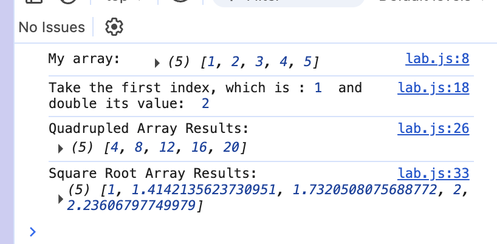

Lab 8 - Anon Functions and Callbacks
Challenge
The challenge for this assignment was to experiment with anonymous functions and callbacks in our JavaScript consoles.
Problems
I wasn't really familiar with the different terms and functions that JavaScript could do, so I started by picking a simpler problem of trying to multiply my array by 2 and 4. I was also having issues trying to get the script to print in my output, so I decided to just not do the bonus task and take and embed a screenshot of the console instead.
Reflection
This was one of the harder labs I've had to do, and it looks like my partner was also having issues, too. We tried to help each other, but we ended up having to do some workarounds/alternatives for our objectives. When I was feeling a little more comfortable/familiar with what I was doing, I decided to try finding the square roots of each value in the array.
Results
This is what the console looks like on this page:
